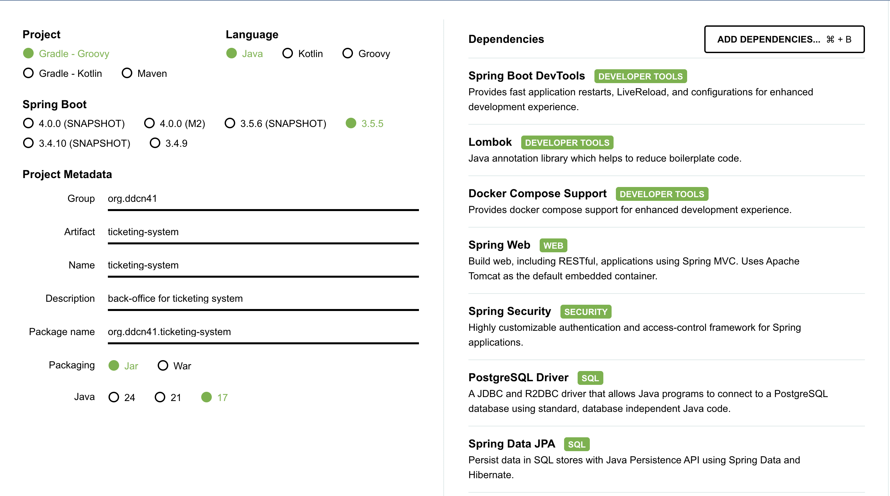

Spring Boot 세팅
코드 스니펫들은 모두 예시로, 실제 프로젝트에서의 코드와는 다를 수 있습니다.
필요 시 하단 reference의 공식문서를 참고 바랍니다.
Spring Boot란?
Spring 기반 애플리케이션 개발 프레임워크입니다.
- 주요 특징
- 자동 설정(Auto Configuration): 복잡한 설정을 자동으로 처리
- 내장 서버: Tomcat, Jetty 등 내장 WAS 제공
- 스타터 패키지: 관련 의존성을 묶어서 제공
- 운영 편의성: Actuator를 통한 모니터링 기능
#기존 Spring (복잡한 XML 설정)
<bean id="dataSource" class="org.apache.commons.dbcp.BasicDataSource">
<property name="driverClassName" value="org.postgresql.Driver"/>
<property name="url" value="jdbc:postgresql://localhost/ticketing"/>
</bean>
# Spring Boot (간단한 설정)
spring:
datasource:
url: jdbc:postgresql://localhost/ticketing
JPA란?
Java Persistence API는 Java 진영의 ORM(Object-Relational Mapping) 표준 명세
- 객체 지향적 데이터 접근: SQL 대신 메서드로 데이터 조작
- 데이터베이스 독립성: 데이터베이스 변경 시 코드 수정 최소화
- 생산성 향상: 반복적인 CRUD 코드 자동 생성
// 복잡한 SQL 없이 객체 관계로 데이터 접근
@Entity
public class Performance {
@Id
@GeneratedValue(strategy = GenerationType.IDENTITY)
private Long performanceId;
@OneToMany(mappedBy = "performance")
private List<Seat> seats;
}
프로젝트 개요
MVP
클라이언트 페이지
- 공연 조회: 전체 공연 목록과 상세 정보 제공
- 예매 기능: 좌석 선택(선착순 방식), 예약 프로세스 진행
- 취소: 예매 취소
어드민 페이지
- 대시보드: 트래픽 지표 등의 데이터 시각화
- 권한 관리: 개발자, 데브옵스, 운영으로 나누어 권한 설정/관리
- 사용자 계정 권한에 따른 서버 증설 등의 권한 차별 부여
- 트래픽 제어: 백오피스 인프라 확장 및 스케일링 기능 (AWS CLI를 이용한 간단한 스케일링)
Auth는 소셜 로그인 없이 구현할 예정입니다.
spring initializr

Dependancy
Developer Tool
Spring Boot DevTools
- 개발 중 코드 변경 시 애플리케이션을 자동으로 재시작하여 개발 생산성을 향상시킵니다.
Lombok
- 보일러플레이트 코드를 자동 생성하여 코드 작성량을 줄입니다.
@Entity @Getter @Setter @NoArgsConstructor @AllArgsConstructor public class Performance { // getter, setter, 생성자 자동 생성 }
- 보일러플레이트 코드를 자동 생성하여 코드 작성량을 줄입니다.
Docker Compose Support
- 개발 환경에서 PostgreSQL, Redis 등의 외부 서비스를 쉽게 실행할 수 있도록 지원합니다.
Web
Spring Web
REST API 개발을 위한 핵심 의존성으로, 내장 Tomcat과 Spring MVC를 포함합니다.
@RestController @RequestMapping("/api/performances") public class PerformanceController { // REST API 엔드포인트 구현 }
Security
- Spring Security
- 인증/인가 처리를 위한 프레임워크입니다. JWT 토큰 기반 인증을 구현할 예정
// 향후 JWT 인증 구현 예정 @PostMapping("/login") public ResponseEntity<LoginResponse> login(@RequestBody LoginRequest request) { String token = jwtUtil.generateToken(user); return ResponseEntity.ok(new LoginResponse(token)); }
- 인증/인가 처리를 위한 프레임워크입니다. JWT 토큰 기반 인증을 구현할 예정
SQL & NOSQL
Spring Data JPA
- ORM 및 데이터 접근 계층을 제공합니다.
@Repository public interface PerformanceRepository extends JpaRepository<Performance, Long> { List<Performance> findByStatusAndStartDateAfter(Status status, LocalDateTime date); }
- ORM 및 데이터 접근 계층을 제공합니다.
PostgreSQL Driver
- 운영 환경에서 사용할 메인 데이터베이스 드라이버
- H2 Database
- 개발 및 테스트용 인메모리 데이터베이스
- Spring Data Redis(Access + Driver)
- 캐싱, 좌석 잠금, 세션 관리를 위한 Redis 연동
OPS
- Spring Boot Actuator
- 운영 환경에서 애플리케이션 모니터링을 위한 엔드포인트/기능 제공
이후 AWS CloutWatch, Dynatrace등의 툴로 모니터링// 관리자 대시보드에서 활용 예정 @GetMapping("/admin/dashboard") public DashboardResponse getDashboard() { double cpuUsage = meterRegistry.get("system.cpu.usage").gauge().value(); return new DashboardResponse(cpuUsage, memoryUsage, activeUsers); }
- 운영 환경에서 애플리케이션 모니터링을 위한 엔드포인트/기능 제공
Folder Structure
initializr에서 필요한 dependancy 추가 후 generate를 실행하게 되면 아래와 같은 폴더 구조를 갖게 됩니다.
자주 확인하게 될 몇가지 파일에 대해 설명을 추가해 두었습니다.
.
├── build.gradle # 의존성 및 빌드 설정
├── compose.yaml # Docker Compose 설정
├── gradlew
├── gradlew.bat
├── settings.gradle
└── src
├── main
│ ├── java
│ │ └── org
│ │ └── ddcn41
│ │ └── ticketing_system
│ │ └── TicketingSystemApplication.java # 메인 클래스
│ └── resources
│ ├── application.yml # 애플리케이션 설정
└── test # 테스트 코드
└── java
└── org
└── ddcn41
└── ticketing_system
└── TicketingSystemApplicationTests.java
build.gradle
프로젝트의 의존성과 빌드 설정을 관리하는 파일입니다.
dependencies {
implementation 'org.springframework.boot:spring-boot-starter-actuator'
implementation 'org.springframework.boot:spring-boot-starter-data-jpa'
implementation 'org.springframework.boot:spring-boot-starter-data-redis'
implementation 'org.springframework.boot:spring-boot-starter-security'
implementation 'org.springframework.boot:spring-boot-starter-web'
compileOnly 'org.projectlombok:lombok'
developmentOnly 'org.springframework.boot:spring-boot-devtools'
developmentOnly 'org.springframework.boot:spring-boot-docker-compose'
runtimeOnly 'com.h2database:h2'
runtimeOnly 'org.postgresql:postgresql'
annotationProcessor 'org.projectlombok:lombok'
testImplementation 'org.springframework.boot:spring-boot-starter-test'
testImplementation 'org.springframework.security:spring-security-test'
}
compose.yaml
개발 환경에서 PostgreSQL과 Redis를 쉽게 실행하기 위한 Docker Compose 설정 파일입니다.
services:
postgres:
image: 'postgres:latest'
environment:
- 'POSTGRES_DB=ticketing'
- 'POSTGRES_PASSWORD=secret'
- 'POSTGRES_USER=myuser'
ports:
- '5432:5432'
redis:
image: 'redis:latest'
ports:
- '6379:6379'
Main Class
./src/main/java/~ 하위에 initializr에서 설정했던 artifact 이름이 카멜케이스로 적용되어 있습니다.
우리 프로젝트의 경우에는 TicketingSystemApplication.java 입니다.
Resources
application.yml 파일에서 애플리케이션의 설정을 관리합니다.
spring:
application:
name: ticketing-system
# 데이터베이스 설정
datasource:
url: jdbc:h2:mem:ticketing # 개발용 H2
driver-class-name: org.h2.Driver
username: sa
password:
# JPA 설정
jpa:
hibernate:
ddl-auto: create-drop
show-sql: true
# Redis 설정
data:
redis:
host: localhost
port: 6379
# Actuator 설정
management:
endpoints:
web:
exposure:
include: health,info,metrics
Security Config 세팅
아래 설정은 개발 초기 단계에서만 사용하며, 향후 실제 인증/인가 로직으로 대체해야 합니다.
./src/main/java/org/ddcn41/ticketing_system/config/SecurityConfig.java
위 경로에 아래와 같이 모든 auth에 대해 모두 허용을 해줍니다.
@Configuration
@EnableWebSecurity
public class SecurityConfig {
@Bean
public SecurityFilterChain filterChain(HttpSecurity http) throws Exception {
http
.authorizeHttpRequests(authz -> authz
.anyRequest().permitAll() // 모든 요청 허용 (개발용만!)
)
.csrf(csrf -> csrf.disable())
.headers(headers -> headers.frameOptions().disable());
return http.build();
}
}
TroubleShooting
docker: Cannot connect to the Docker daemon
도커를 실행하지 않고 빌드를 진행하여 발생한 문제입니다.
Mac의 경우 도커 데스크탑을 실행하여 해결하였습니다.
References
- https://docs.spring.io/spring-boot/
- https://start.spring.io/
- Building a RESTful Web Service: https://spring.io/guides/gs/rest-service/
- Accessing Data with JPA: https://spring.io/guides/gs/accessing-data-jpa/
- Securing a Web Application: https://spring.io/guides/gs/securing-web/